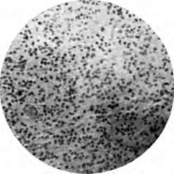
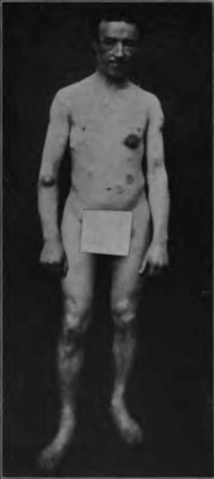

Solitary Lesions
Description
This section is from the book "Skin Cancer", by Henry H. Hazen, A.B., M.D.. Also available from Amazon: Skin Cancer.
Solitary Lesions
Round-Celled
The small round-celled sarcomata are extremely malignant; for it is a peculiarity of sarcomata that the nearer they approach the embryonic type of cell in structure the more malignant they are.
Incidence
The lesions are relatively uncommon, and the majority of dermatologists have not seen more than half a dozen cases. The disease only rarely arises de novo; it usually commences in the scar of a burn, in a nevus, either vascular or pigmented, or in some other abnormality of the skin. Bloodgood,* in discussing the etiology of sarcomata of the skin in general, states: "Among forty cases of sarcoma of the skin there was a distinct precancerous lesion in thirty-two. These lesions were as follows: Congenital nevi, six; scars, nineteen; fibromas, seven." Bloodgood further states that the more malignant tumors, which he is pleased to call perithelial angiosarcomata, but which are probably to be classed under the oat-shaped-celled heading, frequently develop from a congenital nevus, trauma usually starting the new growth. In every instance a fungous tumor develops, usually very rapidly.
Clinical Course
Clinically, there are two types of tumor- (1) where a nodule apparently begins in the normal skin, and (2) where a nevus breaks down. In the first type it is noted that a pale-red, rather vascular, nodule begins to protrude from the skin, and that it bleeds very easily on injury. The lesion is usually round at the start, and may project above the skin, or may be beneath it, according to the depth of the tissue from which it sprang. Ulceration usually takes place, in the center of the growth at least. In the deep type there is considerable induration, but not of the stony character so typical of carcinomata. Growth may be slow or very rapid, and metastasis to the glands often takes place within a few weeks after the first appearance of the tumor is noted. It is not infrequent to find a few metastases in the neighboring skin.
Pathology
Pathologically, the cells are either small or large round cells (Fig. 55) that may or may not be divided into islands by fibrous tissue. Mitotic figures are very common. Usually there is but little inflammatory exudate around the edges of the invading growth. Unna* has some very interesting ideas as to the origin of the sarcoma cells. He holds that the degeneration begins in the healthy tissue with a swelling of the spindle cells; these cells soon withdraw their processes, become round or cubical, and often form true plasma cells. From them, near the margin of the new growth, the true sarcoma cells develop. Thus the plasma cells are a stage in the development of round-celled sarcoma from spindled-celled mesoblastic structures.
*Bloodgood: Progressive Medicine, Dec, 1912. 3 Unna: Histopathology of Diseases of the Skin.
Diagnosis
The sarcomata of this type must be distinguished from endotheliomata, granuloma pyogenicum, and various adenomata of the skin structures. In case of doubt the new growth should be removed by a broad excision, and submitted to histological examination. Usually, however, diagnosis is not difficult, for in sarcoma the growth is more rapid, and there may be early ulceration of the skin.
The sarcomata, originating from nevi, resemble the group first described, except in their origin and early appearance. At first it is noticed that the nevus is enlarging, and ulceration speedily takes place. Then a fungous tumor usually protrudes from the area of ulceration, and the further course is as already described.
Fig. 56.-High-power photomicrograph of small round-celled sarcoma of skin. (Author's collection).
Prognosis And Treatment
The prognosis is bad. Bloodgood states that only one of his six cases was cured by operation. Operation should consist of wide local excision, and removal of the neighboring glands at the same time, using a block operation, so that all tissue is taken out in one place.
Spindle-Celled
The spindle-celled sarcomata are much commoner than are the round-celled neoplasms for the reason that mesoblastic tissue is normally composed of spindle cells. Different grades of malignancy exist, according to whether the tumor consists of fibro-spindle cells, or of the pure oat-shaped or spindle cells.
Incidence
This group of tumors frequently arises from the scars of old wounds or burns, especially those that have healed slowly. Bloodgood states that he has never seen a malignant neoplasm arising from a wound that has healed by first intention. These tumors sometimes arise from preexisting fibromata.
Clinical Course
The tumors appear as firm white or pinkish growths, that usually grow rather rapidly. There is usually considerable dilatation of the surface blood vessels, and ulceration takes place early. The neighboring glands usually become involved within one year. At times, when a glandular enlargement is found, this is not due to metastases of the sarcoma cells, but to inflammation.
Pathology
Pathologically, the cells consist of various types of spindle cells. In some cases these approach fibrous tissue in character, and in other cases are short and oat-shaped: the latter are much more malignant. These cells are arranged in bundles that intersect the growth at all angles, and forming a sort of frame around the blood vessels, which are dilated. Some blood pigment may be deposited in the tissue, chiefly around the vessels. Mitotic figures are rarely seen. A few plasma cells are usually found scattered among the spindle cells, chiefly near the edge of the growth. The elastic tissue is lost at once and the normal lymphatics are obliterated. There is no inflammatory reaction as occurs in carcinoma. Certain of these tumors undoubtedly have their origin in the blood vessels, and hence deserve to be called angiosarcomata, but all tumors of this class do not arise in this way. For a fuller discussion of the pathology of these neoplasms the reader is referred to the work of Unna, which is very complete, and gives an excellent bibliography.
Diagnosis
This group of tumors is easy to diagnose, largely because of the early ulceration.
Prognosis
The prognosis is much better than in the other variety of sarcomas, although by no means as good as might be desired. Bloodgood states that in nineteen cases six have remained well after operation, although most of these were fairly well advanced cases. If the cases can be operated upon early, at least 50 percent should be saved.
Treatment
If seen early, a broad local excision, probably with oval of the neighboring glands, should be the method employed.
Neither radium, the x-ray, nor any of the caustics should be used, except in inoperable neoplasms.
Giant-Celled
Giant-celled sarcomas of the skin are extremely rare, although a few instances have been recorded.
Unna reports a case where there was a small, bluish-red, angioma-like tumor of the face. Unna says: "The whole cutis was transformed into a tumor mass, with numerous cells and very little intercellular substance, over which the epidermis was here and there thinned, and in one place ulcerated. ... It was evident that the tumor cells developed from spindle cells, which, by taking up protoplasm, at first around the nucleus, enlarged, and then assumed all possible forms and dimensions. The cells are so multiform that it is hardly possible to describe them. . . . Almost all of them contain several nuclei. They passed very gradually into giant cells, with which every section swarmed".
Pasini* has recently reported a case of giant-celled sarcoma of the skin, and both Crocker* and Perrin and Leredde* have reported instances of sarcomatosis of the cutis from giant-celled neoplasms. These last reports seem rather singular, for a priori one would hardly suspect that a growth showing the characteristics of a giant-celled sarcoma would be so malignant. In other regions they certainly are not.
Treatment
The treatment should consist of ample local excision, and not of caustics or x-rays, except perhaps as an adjunct to the knife.
As regards the local treatment of extensive or inoperable sarcomata, but little can be said. Wickham has had some really remarkable results with radium. Those who have seen the photographs that he exhibited at the International Dermatological Congress held at Rome in 1912 were wonderfully impressed with his success. A few good results from the x-ray have been reported, but they have not been constant. So far as general treatment goes, Coley's6 serum should be tried, although Coley has had rather better results than others who have used the preparation. Coley's serum consists of a vaccine made from the streptococcus of erysipelas and the bacillus prodigiosus. The rationale of the treatment is as follows: Some years ago it was noted that when a patient suffering from sarcoma was attacked by erysipelas, the result upon the neoplasm was most beneficial; this led some clinicians to inoculate their hopeless sarcoma patients with erysipelas, but the results of the infection were frequently so disastrous that Coley determined to try vaccines, and in some instances his results were excellent. Coley himself does not advise the use of the serum upon operable cases.
*Pasini: Gior. Ital. d. Mai. Ven. e. d. Pel., 1912, liii, 353. * Crocker: Diseases of the Skin.
*Perrin et Leredde: Ann. de Dermat. et de Syphil., 1895, vi, 1038. •Coley: Amer. Jour. Med. Sc., 1893, cv, 487; 1906, cxxxi, 375.
Fig. 56.-Multiple sarcomata. (C. J. White's collection).
Continue to:
Tags
bookdome.com, books, online, free, old, antique, new, read, browse, download